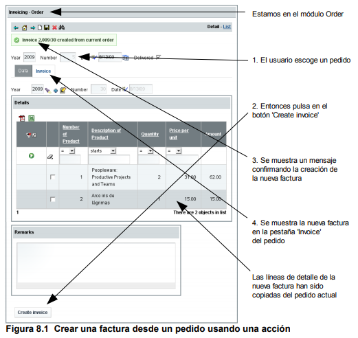
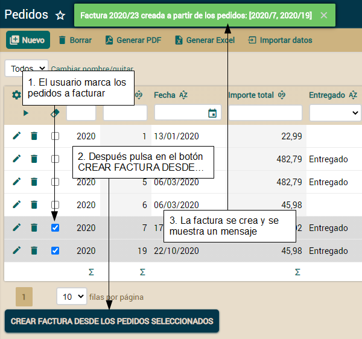
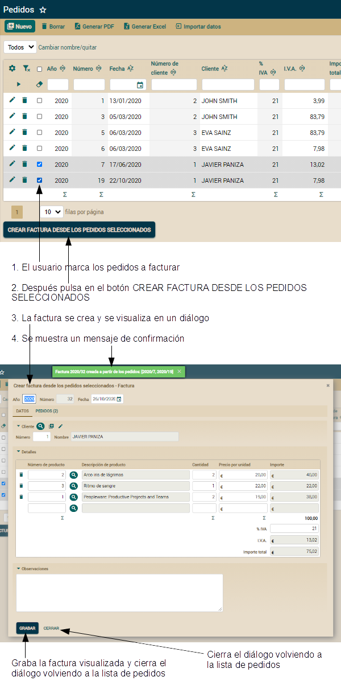

openxava
/ documentación /
Lección 11: Comportamiento y lógica de negocio
Curso:
1.
Primeros pasos |
2.
Modelo básico del dominio (1) |
3.
Modelo básico del dominio (2) |
4.
Refinar la interfaz de usuario |
5.
Desarrollo ágil |
6.
Pruebas automáticas |
7.
Herencia |
8.
Lógica de negocio básica |
9.
Validación avanzada |
10.
Refinar el comportamiento predefinido |
11. Comportamiento
y lógica de negocio |
12.
Referencias y colecciones |
A.
Arquitectura y filosofía |
B.
Java Persistence API |
C.
Anotaciones
OpenXava no es simplemente un marco de trabajo para hacer mantenimientos
(altas, bajas, modificaciones y consultas), más bien está concebido para
desarrollar aplicaciones de gestión plenamente funcionales. Hasta ahora
hemos aprendido como crear y refinar la aplicación para manejar los datos.
Ahora vamos a posibilitar al usuario la ejecución de lógica de negocio
específica.
En esta lección vamos a ver como escribir lógica de negocio en el modelo y
llamar a esta lógica desde acciones personalizadas. Así podrás transformar
tu aplicación de gestión de datos en una herramienta útil para el trabajo
cotidiano de tu usuario.
Lógica de
negocio desde el modo detalle
Empezaremos con el caso más simple: un botón en modo detalle para ejecutar
cierta lógica. En este caso para crear la factura desde un pedido:

Aquí se muestra como esta nueva acción coge el pedido actual y crea una
factura a partir de él. Simplemente copia todos los datos del pedido a la
nueva factura, incluyendo las líneas de detalle. Se muestra un mensaje y
la pestaña FACTURA del pedido visualizará la factura recién creada. Veamos
como codificar este comportamiento.
Crear
una acción para ejecutar lógica personalizada
Como ya sabes el primer paso para tener una acción personalizada en tu
módulo es definir un controlador con esa acción. Por tanto, editemos
controladores.xml y añadamos un nuevo controlador. El siguiente
código muestra el controlador
Pedido:
<controlador nombre="Pedido">
<hereda-de controlador="Facturacion"/> <!-- Para tener las acciones estándar -->
<accion nombre="crearFactura" modo="detail"
clase="com.tuempresa.facturacion.acciones.CrearFacturaDesdePedido"/>
<!-- modo="detail" : Sólo en modo detalle -->
</controlador>
Dado que hemos seguido la convención de dar al controlador el
mismo nombre que a la entidad y el módulo, ya tenemos automáticamente esta
nueva acción disponible para
Pedido. El controlador
Pedido
desciende del controlador
Facturacion. Recuerda que creamos un
controlador
Facturacion en la lección 7. Es un refinamiento del
controlador
Typical.
Ahora hemos de escribir el código Java para la acción. Puedes verlo aquí:
package com.tuempresa.facturacion.acciones; // En el paquete 'acciones'
import org.openxava.actions.*;
import org.openxava.jpa.*;
import com.tuempresa.facturacion.modelo.*;
public class CrearFacturaDesdePedido
extends ViewBaseAction { // Para usar getView()
public void execute() throws Exception {
Pedido pedido = XPersistence.getManager().find( // Usamos JPA para obtener la
Pedido.class, // entidad Pedido visualizada en la vista
getView().getValue("oid"));
pedido.crearFactura(); // El trabajo de verdad lo delegamos en la entidad
getView().refresh(); // Para ver la factura creada en la pestaña FACTURA
addMessage("factura_creada_desde_pedido", // Mensaje de confirmación
pedido.getFactura());
}
}
Realmente simple. Buscamos la entidad
Pedido, llamamos al
método
crearFactura(), refrescamos la vista y mostramos un
mensaje. Fíjate como la acción es un mero intermediario entre la vista (la
interfaz de usuario) y el modelo (la lógica de negocio).
Recuerda añadir el texto del mensaje en el archivo
MensajesFacturacion_es.properties
de la carpeta
i18n:
factura_creada_desde_pedido=Factura {0} creada a partir del pedido actual
Sin embargo, el mensaje tal cual está no se muestra de forma
agradable, porque enviamos como argumento un objeto
Factura.
Necesitamos un
toString() para
Factura y
Pedido
que sea útil para el usuario. Sobrescribiremos
toString() de
DocumentoComercial
(el padre de
Factura y
Pedido) para conseguirlo. Puedes
ver este método
toString():
abstract public class DocumentoComercial extends Eliminable { {
...
public String toString() {
return anyo + "/" + numero;
}
}
El año y el número son perfectos para identificar una factura o
pedido desde el punto de vista del usuario.
Esto es todo para la acción. Veamos la pieza restante, el método
crearFactura() de la entidad
Pedido.
Escribiendo
la lógica de negocio real en la entidad
La lógica de negocio para crear una nueva
Factura está en la
entidad
Pedido, no en la acción. Esto es la forma natural de
hacerlo. El principio esencial de la Orientación a Objetos es que los
objetos no son solo datos, sino datos y lógica. El código más bello es
aquel cuyos objetos contienen la lógica para manejar sus propios datos. Si
tus entidades son meros contenedores de datos (simples envoltorios de las
tablas de la base de datos) y tus acciones tienen toda la lógica para
manipularlos, en ese caso tu código es una perversión del objetivo
original de la Orientación a Objetos.
Aparte de las razones espirituales, poner la lógica para crear una
Factura
dentro de
Pedido es un enfoque pragmático, porque de esta forma
podemos usar esta lógica desde otras acciones, proceso masivos, servicios
web, etc.
Veamos el código del método
crearFactura() de la clase
Pedido,
no olvides añadir los imports indicados:
public class Pedido extends DocumentoComercial {
...
public void crearFactura() throws Exception { // throws Exception para tener
// un código más simple, de momento
Factura factura = new Factura(); // Instancia una factura
BeanUtils.copyProperties(factura, this); // y copia el estado del pedido actual
factura.setOid(null); // Para que JPA sepa que esta entidad todavía no existe
factura.setFecha(LocalDate.now()); // La fecha para la nueva factura es hoy
factura.setDetalles(new ArrayList<>(getDetalles())); // Clona la colección detalles
XPersistence.getManager().persist(factura);
this.factura = factura; // Siempre después de persist()
}
}
La lógica consiste en crear un nuevo objeto
Factura,
copiar los datos desde el
Pedido actual a él y asignar la entidad
resultante a la referencia
factura del
Pedido actual.
Hay tres sutiles detalles aquí. Primero, has de escribir
factura.setOid(null),
si no la nueva
Factura tendría la misma identidad que el
Pedido
original, además a JPA no le gusta persistir los objetos con el id
autogenerado rellenado de antemano. Segundo, has de asignar la nueva
Factura al actual Pedido (
this.factura = factura) después de
llamar a
persist(factura), si no obtendrás un error de JPA (algo
así como “object references an unsaved transient instance”). Tercero,
hemos de envolver la colección
detalles con un
new ArrayList(),
para que sea una colección nueva aunque con los mismos elementos, porque
JPA no quiere la misma colección asignada a dos entidades.
Escribe
menos código usando Apache Commons BeanUtils
Observa como hemos usado
BeanUtils.copyProperties() para copiar
todas las propiedades del actual
Pedido a la nueva
Factura.
Este método copia todas las propiedades con el mismo nombre de un objeto a
otro, incluso si los objetos son de clases diferentes. Esta utilidad
pertenece al proyecto de apache Commons BeanUtils. El jar para esta
utilidad,
commons-beanutils.jar, ya está incluido en tu proyecto.
El siguiente código muestra como usando BeanUtils escribes menos:
BeanUtils.copyProperties(factura, this);
// Es lo mismo que
factura.setOid(getOid());
factura.setAnyo(getAnyo());
factura.setNumero(getNumero());
factura.setFecha(getFecha());
factura.setEliminado(isEliminado());
factura.setCliente(getCliente());
factura.setPorcentajeIVA(getPorcentajeIVA());
factura.setIva(getIva());
factura.setImporteTotal(getImporteTotal());
factura.setObservaciones(getObservaciones());
factura.setDetalles(getDetalles());
Sin embargo, la principal ventaja de usar BeanUtils no es ahorrar
tiempo de tecleo, sino que obtienes un código más resistente a los
cambios. Porque, si añades, quitas o renombras alguna propiedad de
DocumentoComercial
(el padre de
Factura y
Pedido), si estás copiando las
propiedades a mano tienes que cambiar el código, mientras que si estás
usando
BeanUtils.copyProperties() el código funcionará siempre
bien, sin tener que cambiarlo.
Excepciones de aplicación
Recuerda la frase: “La excepción que confirma la regla”. Las reglas, la
vida y el software están llenos de excepciones. Y nuestro método
crearFactura() no es una excepción. Hemos escrito código que
funciona en los casos más comunes. Pero, ¿qué ocurre si el pedido no está
listo para ser facturado o si hay algún problema para acceder a la base de
datos? Obviamente, en este caso necesitamos tomar caminos diferentes.
Es decir, el simple
throws Exception que hemos escrito para el
método
crearFactura() no es suficiente para un comportamiento
refinado. Deberiamos crear nuestra propia excepción, hagámoslo:
package com.tuempresa.facturacion.modelo; // En el paquete 'modelo'
import org.openxava.util.*;
public class CrearFacturaException extends Exception { // No RuntimeException
public CrearFacturaException(String mensaje) {
// El XavaResources es para traducir el mensaje desde el id en i18n
super(XavaResources.getString(mensaje));
}
}
Ahora podemos usar nuestra
CrearFacturaException en lugar
de
Exception en el método
crearFactura() de
Pedido:
public void crearFactura()
throws CrearFacturaException // Una excepción de aplicación (1)
{
if (this.factura != null) { // Si ya tiene una factura no podemos crearla
throw new CrearFacturaException(
"pedido_ya_tiene_factura"); // Admite un id de 18n como argumento
}
if (!isEntregado()) { // Si el pedido no está entregado no podemos crear la factura
throw new CrearFacturaException("pedido_no_entregado");
}
try {
Factura factura = new Factura();
BeanUtils.copyProperties(factura, this);
factura.setOid(null);
factura.setFecha(LocalDate.now());
factura.setDetalles(new ArrayList<>(getDetalles()));
XPersistence.getManager().persist(factura);
this.factura = factura;
}
catch (Exception ex) { // Cualquier excepción inesperada (2)
throw new SystemException( // Se lanza una excepción runtime (3)
"imposible_crear_factura", ex);
}
}
Ahora declaramos explícitamente las excepciones de aplicación que
este método lanza (1). Una excepción de aplicación es una excepción
chequeada que indica un comportamiento especial pero esperado del método.
Una excepción de aplicación está relacionada con la lógica de negocio del
método. Puedes crear una excepción de aplicación para cada posible caso.
Por ejemplo, podrías crear una
PedidoYaTieneFacturaException y una
PedidoNoEntregadoException. Esto te permitiría tratar cada caso de
forma diferente desde el código que usa el método. Aunque, esto no es
necesario en nuestro caso, por tanto nosotros simplemente usamos nuestra
CrearFacturaException,
una excepción de aplicación genérica para este método.
También hemos de enfrentarnos a problemas inesperados (2). Los problemas
inesperados incluyen errores del sistema (acceso a base de datos, la red o
problemas de hardware) o errores de programación (
NullPointerException,
IndexOutOfBoundsException, etc). Cuando nos encontramos con
cualquier problema inesperado lanzamos una
RuntimeException (3).
En este caso hemos lanzado una
SystemException, una
RuntimeException
incluida en OpenXava por comodidad, pero puedes lanzar la
RuntimeException
que quieras.
No necesitas modificar el código de la acción. Si tu acción no atrapa las
excepciones, OpenXava lo hace automáticamente. Muestra los mensajes de las
excepciones de aplicación al usuario; y para las excepciones runtime,
muestra un mensaje de error genérico y aborta la transacción.
Para rematar, añadimos el mensaje para la excepción en los archivos
i18n.
Edita el archivo
MensajesFacturacion_es.properties de la carpeta
Facturacion/i18n
añadiendo las siguientes entradas:
pedido_ya_tiene_factura=El pedido ya tiene una factura
pedido_no_entregado=El pedido todavía no está entregado
imposible_crear_factura=Imposible crear factura
Hay cierto debate en la comunidad de desarrolladores sobre la
manera correcta de usar las excepciones en Java. El enfoque usado en esta
sección es la forma clásica de trabajar con excepciones en el mundo Java
empresarial.
Validar desde la acción
Usualmente el mejor lugar para las validaciones es el modelo, es decir,
las entidades. Sin embargo, a veces es necesario poner lógica de
validación en las acciones. Por ejemplo, si quieres preguntar por el
estado actual de la interfaz gráfica has de hacer la validación en la
acción.
En nuestro caso si el usuario pulsa en CREAR FACTURA cuando está creando
un nuevo pedido que todavía no ha grabado, fallará. Falla porque es
imposible crear una factura desde un pedido inexistente. El usuario ha de
grabar el pedido primero.
Modificamos el método
execute() de
CrearFacturaDesdePedido
para validar que la factura visualizada actualmente esté grabada:
public void execute() throws Exception {
// Añade la siguiente condición
if (getView().getValue("oid") == null) {
// Si el oid es nulo el pedido actual no se ha grabado todavía (1)
addError("imposible_crear_factura_pedido_no_existe");
return;
}
...
}
La validación consiste en verificar que el
oid es nulo
(1), en cuyo caso el usuario está introduciendo un pedido nuevo, pero
todavía no lo ha grabado. En este caso se muestra un mensaje y se aborta
la creación de la factura.
Aquí también tenemos un mensaje para añadir al archivo i18n. Edita el
archivo
MensajesFacturacion_es.properties de la carpeta
Facturacion/i18n
añadiendo la siguiente entrada:
imposible_crear_factura_pedido_no_existe=Imposible crea factura: El pedido no existe todavía
Las validaciones le dicen al usuario que ha hecho algo mal. Esto
es necesario, por supuesto, pero es mejor aún crear una aplicación que
ayude al usuario a evitar hacer las cosas mal. Veamos una forma de hacerlo
en la siguiente sección.
Evento
OnChange para ocultar/mostrar una acción por código
Nuestro actual código es suficientemente robusto como para prevenir que
equivocaciones del usuario estropeen los datos. Vamos a ir un paso más
allá, impidiendo que el usuario se equivoque. Ocultaremos la acción para
crear una nueva factura cuando el pedido no esté listo para ello.
OpenXava permite ocultar y mostrar acciones automáticamente. También
permite ejecutar una acción cuando cierta propiedad sea cambiada por el
usuario en la interfaz de usuario. Con estos dos ingredientes podemos
mostrar el botón sólo cuando la acción esté lista para ser usada.
Recuerda que una factura puede ser generada desde un pedido si el pedido
ha sido entregado y no tiene factura todavía. Por tanto, tenemos que
vigilar los cambios en la referencia
factura y la propiedad
entregado
de la entidad
Pedido. Lo primero será crear la acción que oculta o
muestra la acción para crear una factura desde un pedido,
MostrarOcultarCrearFactura,
con este código:
package com.tuempresa.facturacion.acciones; // En el paquete 'acciones'
import org.openxava.actions.*; // Necesario para usar OnChangePropertyAction,
public class MostrarOcultarCrearFactura
extends OnChangePropertyBaseAction { // Necesario para las acciones @OnChange (1)
public void execute() throws Exception {
if (estaPedidoCreado() && estaEntregado() && !tieneFactura()) { // (2)
addActions("Pedido.crearFactura");
}
else {
removeActions("Pedido.crearFactura");
}
}
private boolean estaPedidoCreado() {
return getView().getValue("oid") != null; // Leemos el valor de la vista
}
private boolean estaEntregado() {
Boolean entregado = (Boolean)
getView().getValue("entregado"); // Leemos el valor de la vista
return entregado == null?false:entregado;
}
private boolean tieneFactura() {
return getView().getValue("factura.oid") != null; // Leemos el valor de la vista
}
}
Después anotamos
factura y
entregado en
Pedido
con
@OnChange para que cuando el usuario cambie el valor de
entregado
o
factura en la pantalla, la acción
MostrarOcultarCrearFactura
se ejecute:
public class Pedido extends DocumentoComercial {
...
@OnChange(MostrarOcultarCrearFactura.class) // Añade esto
Factura factura;
...
@OnChange(MostrarOcultarCrearFactura.class) // Añade esto
boolean entregado;
...
}
MostrarOcultarCrearFactura es una acción convencional con un
método
execute(), aunque extiende de
OnChangePropertyBaseAction
(1). Todas las acciones anotadas con
@OnChange tienen que
implementar
IOnChangePropertyAction, aunque es más fácil extender
de
OnChangePropertyBaseAction la cual lo implementa. Desde esta
acción puedes usar
getNewValue() y
getChangedProperty(),
aunque en este caso concreto no los necesitamos.
El método
execute() pregunta si el pedido visualizado está
grabado, entregado y todavía no tiene una factura (2), en cuyo caso
muestra la acción con
addActions("Pedido.crearFactura"), en caso
contrario oculta la acción con
removeActions("Pedido.crearFactura").
Así, ocultamos o mostramos la acción
Pedido.crearFactura,
mostrándola solo cuando proceda. Los métodos
add/removeActions()
permiten especificar varias acciones a mostrar u ocultar separadas por
comas.
Ahora cuando marcas o desmarcas la casilla
entregado o escoges una
factura, el botón para la acción se muestra u oculta. También, cuando el
usuario pulsa en
Nuevo para crear un nuevo pedido el botón para
crear la factura se oculta. Sin embargo, al editar un pedido ya existente,
el botón estará siempre presente, aunque el pedido no cumpla los
requisitos. Esto es porque cuando un objeto se busca y visualiza las
acciones
@OnChange no se ejecutan por defecto. Podemos cambiar
esto con una pequeña modificación en
BuscarExcluyendoEliminados:
public class BuscarExcluyendoEliminados
// extends SearchByViewKeyAction {
extends SearchExecutingOnChangeAction { // Usa ésta como clase base
La acción de búsqueda por defecto, es decir,
SearchByViewKeyAction
no ejecuta las acciones
@OnChange por defecto, por tanto cambiamos
nuestra acción de buscar para que extienda de
SearchExecutingOnChangeAction.
SearchExecutingOnChangeAction se comporta exactamente igual que
SearchByViewKeyAction
pero ejecutando los eventos
OnChange. De esta forma cuando el
usuario escoge un pedido la acción
MostrarOcultarCrearFactura se
ejecuta.
Nos queda un pequeño detalle para que todo esto sea perfecto: cuando el
usuario pulsa en CREAR FACTURA después de que la factura se haya creado el
botón se tiene que ocultar. El usuario no puede crear la factura otra vez.
Podemos implementar esta funcionalidad con un ligero refinamiento de
CrearFacturaDesdePedido,
así:
public void execute() throws Exception {
...
// Todo ha ido bien, por tanto ocultamos la acción
removeActions("Pedido.crearFactura");
}
Como puedes ver simplemente añadimos
removeActions("Pedido.crearFactura")
al final del método
execute().
Mostrar y ocultar acciones no es un sustituto para la validación en el
modelo. Las validaciones siguen siendo necesarias porque las entidades
pueden ser usadas desde cualquier otra parte de la aplicación, no solo de
los módulos de mantenimiento. Sin embargo, el truco de ocultar y mostrar
acciones mejora la experiencia del usuario.
Lógica de negocio
desde el modo lista
En la lección 7 aprendiste como crear acciones de lista. Las acciones de
lista son una herramienta utilísima para dar al usuario la posibilidad de
aplicar lógica a varios objetos a la vez. En nuestro caso, podemos añadir
una acción en el modo lista para crear una nueva factura automáticamente a
partir de varios pedidos seleccionados en la lista, de esta manera:

Aquí se muestra como esta acción de lista coge los pedidos seleccionados y
crea una factura a partir de ellos. Simplemente copia los datos del pedido
en la nueva factura, añadiendo las línea de detalle de todos los pedidos
en una única factura. También se muestra un mensaje. Veamos como codificar
este comportamiento.
Acción de lista con
lógica propia
Como ya sabes, el primer paso para tener una acción propia en tu módulo es
añadirla a un controlador. Por tanto, editemos
controladores.xml
añadiendo una nueva acción al controlador
Pedido:
<controlador nombre="Pedido">
...
<!-- La nueva acción -->
<accion nombre="crearFacturaDesdePedidosSeleccionados"
modo="list"
clase="com.tuempresa.facturacion.acciones.CrearFacturaDesdePedidosSeleccionados"/>
<!-- modo="list": Sólo se muestra en modo lista -->
</controlador>
Solo con esto ya tienes una nueva acción disponible para
Pedido
en modo lista.
Ahora hemos de escribir el código Java para la acción:
package com.tuempresa.facturacion.acciones;
import java.util.*;
import javax.ejb.*;
import org.openxava.actions.*;
import org.openxava.model.*;
import com.tuempresa.facturacion.modelo.*;
public class CrearFacturaDesdePedidosSeleccionados
extends TabBaseAction { // Tipico de acciones de lista. Permite usar getTab() (1)
public void execute() throws Exception {
Collection<Pedido> pedidos = getPedidosSeleccionados(); // (2)
Factura factura = Factura.crearDesdePedidos(pedidos); // (3)
addMessage("factura_creada_desde_pedidos", factura, pedidos); // (4)
}
private Collection<Pedido> getPedidosSeleccionados() // (5)
throws FinderException
{
Collection<Pedido> pedidos = new ArrayList<>();
for (Map key: getTab().getSelectedKeys()) { // (6)
Pedido pedido = (Pedido) MapFacade.findEntity("Pedido", key); // (7)
pedidos.add(pedido);
}
return pedidos;
}
}
Realmente sencillo. Obtenemos la lista de los pedidos marcados en
la lista (2), llamamos al método estático
crearDesdePedidos() (3)
de
Factura y mostramos un mensaje (4). En este caso también
ponemos la lógica real en la clase del modelo, no en la acción. Dado que
la lógica aplica a varios pedidos y crea una nueva factura, el lugar
natural para ponerlo es en un método estático de la clase
Factura.
El método
getPedidosSeleccionados() (5) devuelve una colección con
las entidades
Pedido marcadas por el usuario en la lista. Para
hacerlo, el método usa
getTab() (6), disponible en
TabBaseAction
(1), que devuelve un objeto
org.openxava.tab.Tab. El objeto
Tab
te permite manejar los datos tabulares de la lista. En este caso usamos
getSelectedKeys()
(6) que devuelve una colección con las claves de las filas seleccionadas.
Dado que esas claves están en formato
Map usamos
MapFacade.findEntity()
(7) para convertirlas en entidades
Pedido.
Acuérdate de añadir el texto del mensaje al fichero
MensajesFacturacion_es.properties en la carpeta
i18n:
factura_creada_desde_pedidos=Factura {0} creada a partir de los pedidos: {1}
Eso es todo para la acción. Veamos la pieza que falta, el método
crearDesdePedidos() de la entidad
Factura.
Lógica
de negocio en el modelo sobre varias entidades
La lógica de negocio para crear una nueva
Factura a partir de
varias entidades
Pedido está en la capa del modelo, es decir, en
las entidades, no en la acción. No podemos poner el método en la clase
Pedido,
porque el proceso se hace a partir de varios pedidos, no de uno. No
podemos usar un método de instancia en
Factura porque todavía no
existe el objeto
Factura, de hecho lo que queremos es crearlo. Por
lo tanto, vamos a crear un método de factoría estático en la clase
Factura
para crear una nueva
Factura a partir de varios pedidos. Puedes
ver este método aquí:
public class Factura extends DocumentoComercial {
...
public static Factura crearDesdePedidos(Collection<Pedido> pedidos)
throws CrearFacturaException
{
Factura factura = null;
for (Pedido pedido: pedidos) {
if (factura == null) { // El primero pedido
pedido.crearFactura(); // Reutilizamos la lógica para crear una
// factura desde un pedido
factura = pedido.getFactura(); // y usamos la factura creada
}
else { // Para el resto de los pedidos la factura ya está creada
pedido.setFactura(factura); // Asigna la factura
factura.getDetalles().addAll(pedido.getDetalles()); // Copia las líneas
factura.setIva(
factura.getIva().add(pedido.getIva())); // Acumala el IVA
factura.setImporteTotal( // y el importe total
factura.getImporteTotal().add(pedido.getImporteTotal()));
}
}
if (factura == null) { // Si no hay pedidos
throw new CrearFacturaException("pedidos_no_especificados");
}
return factura;
}
}
Usamos el primer
Pedido para crear una nueva
Factura
usando el método ya existente
crearFactura() de
Pedido.
Entonces copiamos las líneas de los pedidos restantes a la nueva
Factura
y acumulamos en ella el
iva e
importeTotal de los pedidos.
Además, asignamos la nueva
Factura como la factura de los pedidos
de la colección.
Si
factura es nulo al final del proceso, es porque la colección
pedidos
está vacía. En este caso lanzamos una
CrearFacturaException, ya
que la acción no atrapa las excepciones, OpenXava muestra el mensaje de la
excepción al usuario. Esto está bien. Si el usuario no marca los pedido y
pulsa en el botón para crear la factura, le aparecerá ese mensaje de
error.
Acuérdate de añadir los textos para los mensajes en el archivo
MensajesFacturacion_es.properties
de la carpeta
i18n:
pedidos_no_especificados=Pedidos no especificados
Este no es el único error con el que el usuario puede encontrarse.
Todas las validaciones que hemos escrito para
Factura y
Pedido
hasta ahora se aplican automáticamente, por lo tanto el usuario ha de
escoger pedidos ya entregados y sin factura. La validación del modelo
impide que el usuario cree una factura desde pedidos no apropiados.
Mostrar un diálogo
Después de crear una factura a partir de varios pedidos, sería práctico
para el usuario ver y posiblemente editar la nueva factura. Una forma de
conseguir esto es sacando un diálogo que permite ver y editar la recién
creada factura. De esta forma:

Veamos como implementar este comportamiento.
Usar showDialog()
El primer paso es modificar
CrearFacturaDesdePedidosSeleccionados
para mostrar un diálogo después de crear la factura, con sólo añadir unas
poca línea al final de
execute() es suficiente:
public void execute() throws Exception {
Collection<Pedido> pedidos = getPedidosSeleccionados();
Factura factura = Factura.crearDesdePedidos(pedidos);
addMessage("factura_creada_desde_pedidos", factura, pedidos);
// Añade las siguientes líneas para mostrar el diálogo
showDialog(); // (1)
// A partir de ahora getView() es el diálogo
getView().setModel(factura); // Visualiza la factura en el diálogo (2)
getView().setKeyEditable(false); // Para indicar que el objeto ya existe (3)
setControllers("EdicionFactura"); // Las acciones del diálogo (4)
}
Llamamos a
showDialog() (1), lo que saca un diálogo y a
partir de ese momento cuando usamos
getView() referencia a la
vista del diálogo no a la vista principal del módulo. Después de
showDialog()
el diálogo está en blanco, hasta que asignamos nuestra factura a la vista
con
getView().setModel(factura) (2), ahora la factura se visualiza
en el diálogo. La siguiente línea,
getView().setKeyEditable(false)
(3), es para indicar que la factura ya está grabada y así más adelante la
acción de grabar correspondiente sepa como comportarse. Finalmente, usamos
setControllers("EdicionFactura") para definir el controlador con
las acciones a presentar en el diálogo, es decir los botones de abajo del
diálogo. Fíjate como
setControllers() es una alternativa a
addActions().
Obviamente, esto no funcionará hasta que tengamos el controlador
EdicionFactura
definido. Haremos esto en la siguiente sección.
Definir las acciones
del diálogo
El diálogo permite al usuario cambiar la factura y grabar los cambios o
simplemente cerrar la factura después de examinarla. Estas acciones se
definen en el controlador
EdicionFactura en
controladores.xml:
<controlador nombre="EdicionFactura">
<accion nombre="grabar"
clase="com.tuempresa.facturacion.acciones.GrabarFactura"
atajo-de-teclado="Control S"/>
<accion nombre="cerrar"
clase="org.openxava.actions.CancelAction"/>
</controlador>
Las dos acciones de este controlador representan los dos botones,
GRABAR y CERRAR que viste en la imagen anterior.
Cerrar el diálogo
GrabarFactura contiene sólo una extensión menor de la acción
estándar
SaveAction de OpenXava:
package com.tuempresa.facturacion.acciones;
import org.openxava.actions.*;
public class GrabarFactura
extends SaveAction { // Acción estándar de OpenXava para
// grabar el contenido de la vista
public void execute() throws Exception {
super.execute(); // La lógica estándar de grabación (1)
closeDialog(); // (2)
}
}
La acción extiende
SaveAction sobrescribiendo el método
execute()
para simplemente llamar a la lógica estándar, con
super.execute()
(1), y después cerrar el diálogo con
closeDialog() (2). De esta
forma, cuando el usuario pulsa en GRABAR, los datos de la factura se
graban y el diálogo se cierrar volviendo a la lista de pedidos, listo para
continuar creando facturas a partir de pedidos.
Para el botón CERRAR usamos
CancelAction, una acción incluida en
OpenXava que simplemente cierra el diálogo.
Vista plana en lugar de
diálogo
A veces en lugar de sacar un diálogo encima:

Podriamos preferir reemplazar la vista actual por la nueva, así:

Esto puede ser útil cuando la cantidad de información a mostrar es muy
grande y en un diálogo queda mal. Usar una vista plana en vez de un
diálogo es tan fácil como cambiar esta línea de tu
CrearFacturaDesdePedidosSeleccionados:
showDialog();
Por esta otra:
showNewView();
No hace falta nada más. Bueno, quizás cambiar el nombre de la
acción "cerrar" por "volver" en el controlador
EdicionFactura en
controllers.xml.
El trabajo está casi terminado. Puedes probar el módulo
Pedido:
escoge varios pedidos y pulsa en el botón CREAR FACTURA DESDE PEDIDOS
SELECCIONADOS. Entonces verás la factura creada en un diálogo.
Pruebas JUnit
El código que hemos escrito en esta lección no estará completo hasta que
no escribamos las pruebas. Recuerda, todo código nuevo tiene que tener su
correspondiente código de prueba. Escribamos pues las pruebas para estas
dos nuevas acciones.
Probar la acción de
modo detalle
Primero probaremos la acción
Pedido.crearFactura, la acción para
crear una factura a partir del modo detalle del pedido visualizado.
Recordamos aquí como funciona este proceso:
Ahora vamos a escribir la prueba para verificar que funciona justo de esta
forma. Añade el método
testCrearFacturaDesdePedido() a la clase
PruebaPedido:
public void testCrearFacturaDesdePedido() throws Exception {
login("admin", "admin");
// Buscar el pedido
buscarPedidoSusceptibleDeSerFacturado(); // Busca un pedido
assertValue("entregado", "true"); // El pedido está entregado
int cantidadDetallesPedido = getCollectionRowCount("detalles"); // Toma nota de
// la cantidad de detalles en el pedido
execute("Sections.change", "activeSection=1"); // La sección de la factura
assertValue("factura.anyo", ""); // Todavía no hay factura
assertValue("factura.numero", ""); // en este pedido
// Crear la factura
execute("Pedido.crearFactura"); // Ejecuta la acción que estamos probando (1)
String anyoFactura = getValue("factura.anyo"); // Verifica que ahora
assertTrue("Año de fectura ha de tener valor", // hay una factura
!Is.emptyString(anyoFactura)); // en la pestaña de factura (2)
String numeroFactura = getValue("factura.numero");
assertTrue("Número de factura ha de tener valor",
!Is.emptyString(numeroFactura)); // Is.emptyString() es de org.openxava.util
assertMessage("Factura " + anyoFactura + "/" + numeroFactura +
" creada a partir del pedido actual"); // El mensaje de confirmación (3)
assertCollectionRowCount("factura.detalles", // La factura recién creada
cantidadDetallesPedido); // tiene el mismo número de detalles que el pedido (4)
// Restaurar el pedido para poder ejecutar la prueba la siguiente vez
setValue("factura.anyo", "");
assertValue("factura.numero", "");
assertCollectionRowCount("factura.detalles", 0);
execute("CRUD.save");
assertNoErrors();
}
Esta prueba pulsa el botón para ejecutar la acción
Pedido.crearFactura
(1), entonces verifica que una factura ha sido creada, está siendo
visualizada en la pestaña de factura (2) y tiene la misma cantidad de
líneas de detalle que el pedido actual (4). También comprueba que se ha
generado el mensaje de confirmación correcto (3).
Para ejecutarla es necesario escoger un pedido susceptible de ser
facturado. Esto se hace en el método
buscarPedidoSusceptibleDeSerFacturado()
que vamos a examinar en la siguiente sección.
Buscar
una entidad para la prueba usando el modo lista y JPA
Para seleccionar un pedido adecuado para nuestra prueba usaremos JPA para
determinar el año y número de ese pedido, y entonces usaremos el modo
lista para seleccionar este pedido y editarlo en modo detalle. Aquí tienes
los métodos para implementar esto:
private void buscarPedidoSusceptibleDeSerFacturado() throws Exception {
buscarPedidoUsandoLista("entregado = true and factura = null"); // Envía la condición,
} // en este caso buscamos por un pedido entregado y sin factura
private void buscarPedidoUsandoLista(String condicion) throws Exception {
Pedido pedido = buscarPedido(condicion); // Busca el pedido con la condición usando JPA
String anyo = String.valueOf(pedido.getAnyo());
String numero = String.valueOf(pedido.getNumero());
setConditionValues(new String [] { anyo, numero }); // Llena el año y el número
execute("List.filter"); // y pulsa en el botón filtrar en la lista
assertListRowCount(1); // Sólo una fila, correspondiente al pedido buscado
execute("List.viewDetail", "row=0"); // Para ver el pedido en modo detalle
assertValue("anyo", anyo); // Verifica que el pedido editado
assertValue("numero", numero); // es el deseado
}
private Pedido buscarPedido(String condicion) {
Query query = XPersistence.getManager().createQuery( // Crea una consulta JPA
"from Pedido p where p.eliminado = false and " // a partir de la condición. Fíjate en
+ condicion); // deleted = false para excluir los pedidos borrados
List<Pedido> pedidos = query.getResultList();
if (pedidos.isEmpty()) { // Es necesario al menos un pedido con la condición
fail("Para ejecutar esta prueba necesitas tener al menos un pedido con " + condicion);
}
return pedidos.get(0);
}
Además necesitas añadir los siguiente imports a
PruebaPedido
para que te compile:
import java.util.*;
import javax.persistence.*;
import org.openxava.jpa.*;
import org.openxava.util.*;
import com.tuempresa.facturacion.modelo.*;
El método
buscarPedidoSusceptibleDeSerFacturado()
simplemente llama a un método más genérico,
buscarPedidoUsandoLista(),
para buscar una entidad por una condición. El método
buscarPedidoUsandoLista()
obtiene la entidad
Pedido mediante
buscarPedido(),
entonces usa la lista para filtrar por el año y el número a partir de este
Pedido, yendo a modo detalle al finalizar. El método
buscarPedido()
usa JPA simple y llano para buscar.
Como puedes ver, combinar el modo lista con JPA es una herramienta muy
útil en ciertas circunstancias. Usaremos los métodos
buscarPedidoUsandoLista()
y
buscarPedido() en las siguientes pruebas.
Probar
que la acción se oculta cuando no aplica
Recuerda que refinamos el módulo
Pedido para que mostrara la
acción para crear la factura sólo cuando el pedido visualizado fuese
susceptible de ser facturado. Éste es el método de prueba para este caso,
añádelo a
PruebaPedido:
public void testOcultaCrearFacturaDesdePedidoCuandoNoAplicable() throws Exception {
login("admin", "admin");
buscarPedidoUsandoLista(
"entregado = true and factura <> null"); // Si el pedido ya tiene factura
assertNoAction("Pedido.crearFactura"); // no se puede facturar otra vez
execute("Mode.list");
buscarPedidoUsandoLista(
"entregado = false and factura = null"); // Si el pedido no está entregado
assertNoAction("Pedido.crearFactura"); // no se puede facturar
execute("CRUD.new"); // Si el pedido todavía no está grabado
assertNoAction("Pedido.crearFactura"); // no puede ser facturado
}
Probamos tres casos en los que el botón para crear la factura no
tiene que estar presente. Fíjate en el uso de
assertNoAction()
para preguntar si el vínculo o botón para una acción está presente en la
interfaz de usuario. Aquí estamos reutilizando el método
buscarPedidoUsandoLista()
desarrollado en la sección anterior.
Ya hemos probado que el botón está presente cuando el pedido es adecuado
en la prueba
testCrearFacturaDesdePedido(), porque
execute()
falla si la acción no está en la interfaz de usuario.
Probar la acción de modo
lista
Ahora probaremos
Pedido.crearFacturaDesdePedidosSeleccionados, la
acción que crea una factura desde varios pedidos en modo lista. Recordemos
su funcionamiento:
Escribamos una prueba para verificar que esto funciona justo de esta
forma. Añade el método
testCrearFacturaDesdePedidosSeleccionados()
a la clase
PruebaPedido:
public void testCrearFacturaDesdePedidosSeleccionados() throws Exception {
login("admin", "admin");
verificarPedido(2021, 2, 1, "45.98"); // El pedido 2021/2 tiene 1 línea y 45,98 de importe base
verificarPedido(2021, 4, 2, "98.01"); // El pedido 2021/4 tiene 2 líneas y 98,01 de importe base
execute("List.orderBy", "property=numero"); // Ordena la lista por número
checkRow( // Marca la fila a partir del número de fila
getFilaDocumentoEnLista("2021", "2") // Obtiene la fila del año y número del pedido
); // por tanto, esta línea marca la línea del pedido 2021/2 en la lista (1)
checkRow(
getFilaDocumentoEnLista("2021", "4") // Marca el pedido 2021/4 en la lista (1)
);
execute("Pedido.crearFacturaDesdePedidosSeleccionados"); // Ejecuta la acción que
// estamos probando (2)
String anyoFactura = getValue("anyo"); // Ahora estamos viendo el detalle de
String numeroFactura = getValue("numero"); // la factura recién creada
assertMessage("Factura " + anyoFactura + "/" + numeroFactura +
" creada a partir de los pedidos: [2021/2, 2021/4]"); // El mensaje de confirmación
assertCollectionRowCount("detalles", 3); // Confirma que el número de líneas de la
// factura recién creada es la suma de la de los pedidos fuente (3)
assertValue("importeTotal", "143,99"); // Confirma que el importe base de la factura
// recién creada es la suma de la de los pedidos fuente (4)
execute("Sections.change", "activeSection=1"); // Cambia a la pestaña de
// pedidos de la factura
assertCollectionRowCount("pedidos", 2); // La nueva factura tiene 2 pedidos (5)
assertValueInCollection("pedidos", 0, 0, "2021"); // y son los correctos
assertValueInCollection("pedidos", 0, 1, "2");
assertValueInCollection("pedidos", 1, 0, "2021");
assertValueInCollection("pedidos", 1, 1, "4");
assertAction("EdicionFactura.grabar"); // Los botones GRABAR (6)
assertAction("EdicionFactura.cerrar"); // y CERRAR (6)
checkRowCollection("pedidos", 0); // Seleccionamos los 2 pedidos
checkRowCollection("pedidos", 1);
execute("Collection.removeSelected", // y los borramos, para ejecutar esta prueba
"viewObject=xava_view_section1_pedidos"); // otra vez usando los mismo pedidos
assertNoErrors();
execute("EdicionFactura.cerrar"); // Vuelve a la lista de pedidos (7)
confirmarDocumentoEstaEnLista("2021", "2"); // Confirma que estamos realmente
confirmarDocumentoEstaEnLista("2021", "4"); // en la lista de pedidos
}
Esta prueba marca dos pedidos (1) y pulsa en el botón CREAR
FACTURA DESDE LOS PEDIDOS SELECCIONADOS (2). Entonces verifica que se ha
creado una nueva factura con el número correcto de líneas (3), importe
total (4) y lista de pedidos (5). También verifica que las acciones GRABAR
y CERRAR están disponibles (6) y usa el botón CERRAR para volver a la
lista de pedidos (7).
Usamos
getFilaDocumentoEnLista() y
confirmarDocumentoEstaEnLista(),
métodos de la clase base
PruebaDocumentoComercial, que fueron
definidos originalmente como privados, por lo tanto tenemos que
redefinirlos como protegidos para poder utilizarlos desde
PruebaPedido.
Edita
PruebaDocumentoComercial y haz los siguientes cambios:
protected void confirmarDocumentoEstaEnLista(String anyo, String numero) ... // protected en lugar
// private void confirmarDocumentoEstaEnLista(String anyo, String numero) ... // de private
protected int getFilaDocumentoEnLista(String anyo, String numero) ... // protected en lugar
// private int getFilaDocumentoEnLista(String anyo, String numero) ... // de private
El único detalle pendiente es el método
verificarPedido()
que veremos en la siguiente sección.
Verificar datos de prueba
En la lección 3 (Pruebas automáticas) aprendiste como confiar en datos
existentes en la base de datos para tus pruebas. Obviamente, si tu base de
datos se altera accidentalmente tus pruebas, aunque correctas, no pasarán.
Por tanto, verificar los valores de la base de datos antes de ejecutar la
prueba que confía en ellos es una buena práctica. En nuestro ejemplo lo
hacemos llamando a
verificarPedido() al principio. Veamos el
contenido de
verificarPedido():
private void verificarPedido(
int anyo, int numero, int cantidadDetalles, String importeTotal)
{
Pedido pedido = buscarPedido("anyo = " + anyo + " and numero=" + numero);
assertEquals("Para ejecutar esta prueba el pedido " +
pedido + " tiene que tener " + cantidadDetalles + " detalles",
cantidadDetalles, pedido.getDetalles().size());
assertTrue("Para ejecutar esta prueba el pedido " +
pedido + " must have " + importeTotal + " como importe total",
pedido.getImporteTotal().compareTo(new BigDecimal(importeTotal)) == 0);
assertTrue("Para ejecutar esta prueba el pedido " + pedido + " tiene que estar entegrado",
pedido.isEntregado());
}
Este método busca un pedido y verifica la cantidad de líneas, el
importe total y si el pedido está entregado. Usar este método tiene la
ventaja de que si los pedidos necesarios para la prueba no están en la
base de datos con los valores correctos obtienes un mensaje preciso. Así,
no derrocharás tu tiempo intentando adivinar que es lo que está mal. Esto
es especialmente útil si la prueba no la está ejecutando el programador
original. Por cierto, si te resulta dificil adaptar tus pedidos para que
se ajusten a esta prueba (número de pedido, importe, número de líneas),
puedes adaptar los valores en la prueba a tus pedidos actuales.
Probar casos excepcionales
Dado que la acción para crear la factura se oculta si el pedido no está
listo para ser facturado, no podemos probar el código para los casos
excepcionales desde modo detalle. Sin embargo, en modo lista el usuario
todavía tiene la opción de escoger cualquier pedido para facturar. Por
tanto, intentaremos crear la factura desde la lista de pedidos para probar
que los casos excepcionales se comportan correctamente. Añade el siguiente
código a
PruebaPedido:
public void testExcepcionesCreandoFacturaDesdePedido() throws Exception {
login("admin", "admin");
confirmarExcepcionCreandoFacturaDesdePedido( // Confirma que cuando el pedido ya tiene (1)
"entregado = true and factura <> null", // factura se produce el error correcto
"Ha sido imposible ejecutar la acción Crear factura desde pedidos seleccionados: " +
"El pedido ya tiene una factura"
);
confirmarExcepcionCreandoFacturaDesdePedido( // Confirma que cuando el pedido no está (2)
"entregado = false and factura = null", // entregado se produce el error correcto
"Ha sido imposible ejecutar la acción Crear factura desde pedidos seleccionados: " +
"El pedido todavía no está entregado"
);
}
private void confirmarExcepcionCreandoFacturaDesdePedido(
String condicion, String mensaje) throws Exception
{
Pedido pedido = buscarPedido(condicion); // Busca el pedido por la condición (3)
int fila = getFilaDocumentoEnLista( // y obtiene el número de fila para ese pedido (4)
String.valueOf(pedido.getAnyo()),
String.valueOf(pedido.getNumero())
);
checkRow(fila); // Marca la fila (5)
execute("Pedido.crearFacturaDesdePedidosSeleccionados"); // Trata de crear la factura (6)
assertError(mensaje); // ¿Se ha mostrado el mensaje esperado? (7)
uncheckRow(fila); // Desmarca la fila, así podemos llamar a este método otra vez
}
La prueba verifica que el mensaje es el correcto cuando tratamos
de crear una factura a partir de un pedido que ya tiene factura (1), y
también desde un pedido no entregado todavía (2). Para hacer estas
verificaciones llama al método
confirmarExcepcionCreandoFacturaDesdePedido().
Este método busca la entidad
Pedido usando la condición (3),
localiza la fila donde la entidad se está visualizando (4) y la marca (5).
Después, la prueba ejecuta la acción (6) y verifica que el mensaje
esperado se muestra (7).
Resumen
La sal de tu aplicación son las acciones y los métodos. Gracias a ellos
puedes convertir una simple aplicación de gestión de datos en una
herramienta útil. En este caso, por ejemplo, hemos provisto al usuario con
una forma de crear automáticamente facturas desde pedidos.
Has aprendido como crear métodos de lógica de negocio tanto estáticos como
de instancia, y como llamarlos desde acciones de modo detalle y modo
lista. Por el camino has visto como ocultar y mostrar acciones, usar
excepciones, validar en las acciones, mostrar diálogos y cómo hacer las
pruebas automáticas de todo esto.
Todavía nos quedan muchas cosas interesante por aprender, por ejemplo en
la siguiente lección vamos a refinar el comportamiento de las referencias
y colecciones.
Descargar código fuente de esta lección
¿Problemas con la lección? Pregunta en el foro ¿Ha ido bien?
Ve a la
lección 12